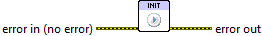

Init¶
This optional VI allows you to manually start the plotting system.
The Toolkit uses plotting resources which have to be unpacked and set up whenever plots are made. Resources are cached between LabVIEW sessions in order to minimize this startup time. However, a few seconds of startup delay is still typical for the first call during a LabVIEW session. Subsequent calls incur no overhead.
This VI does nothing but trigger initialization of the plotting system. You can use it to handle initialization outside of the main event loop of your VI, in order to avoid “startup freeze”.
This VI also allows you to handle the (rare) cases in which a problem occurs during initialization. Since this VI does nothing other than start the plotting system, you can use it to trap the errors listed below and take appropriate action, rather than explicitly handling them for each call to a plotting VI.

 Error In/Out
Error In/Out- Terminals for standard error functionality.